Galería Histórica
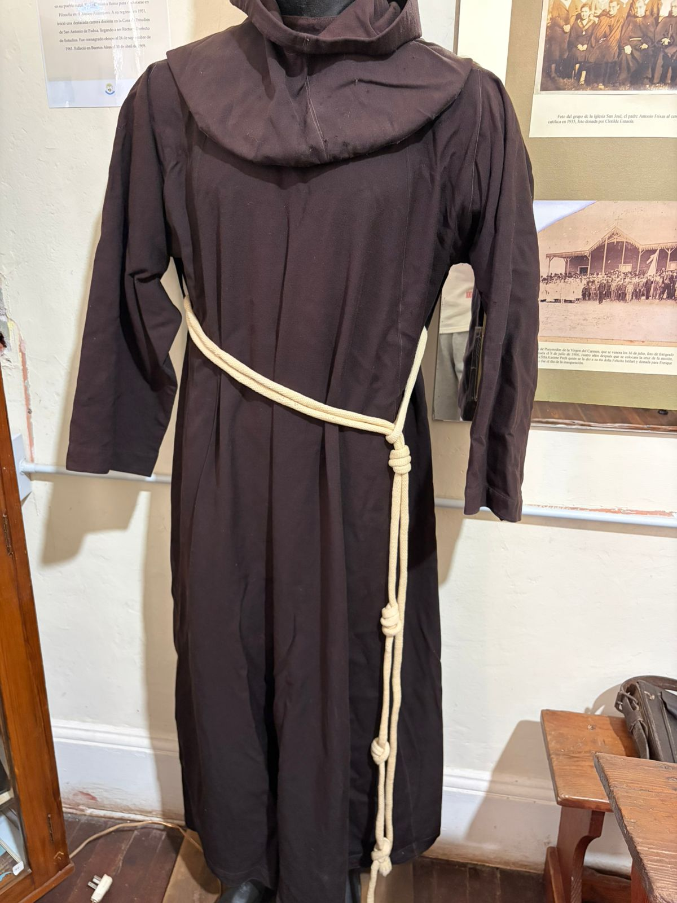
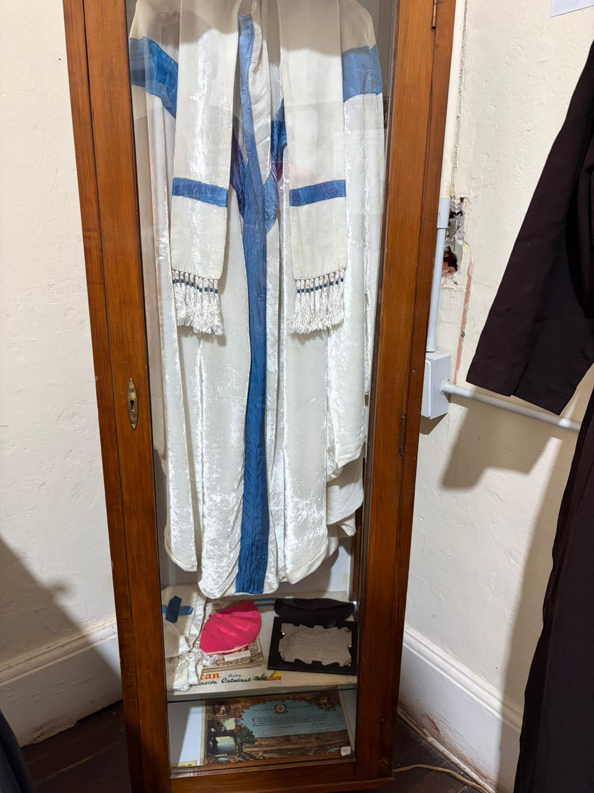
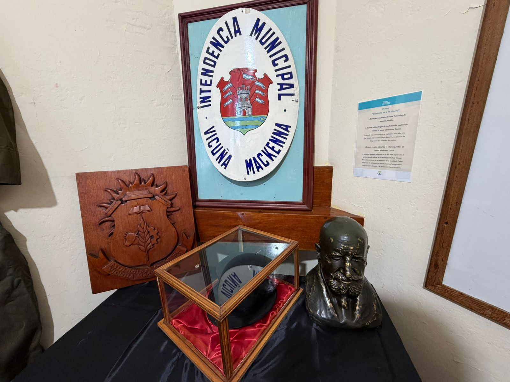
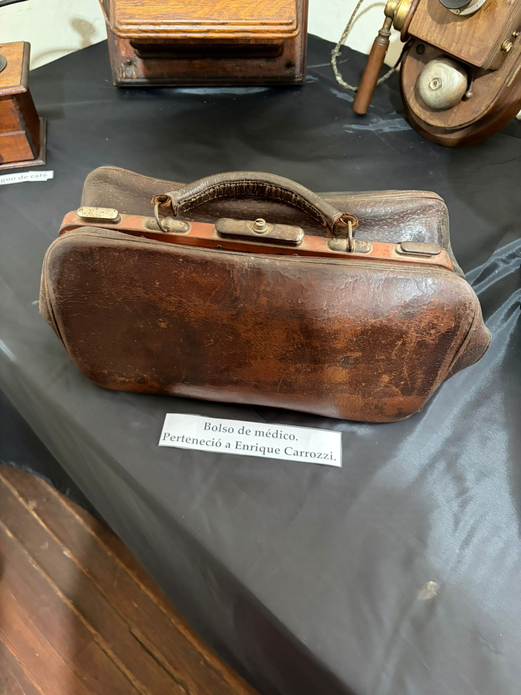

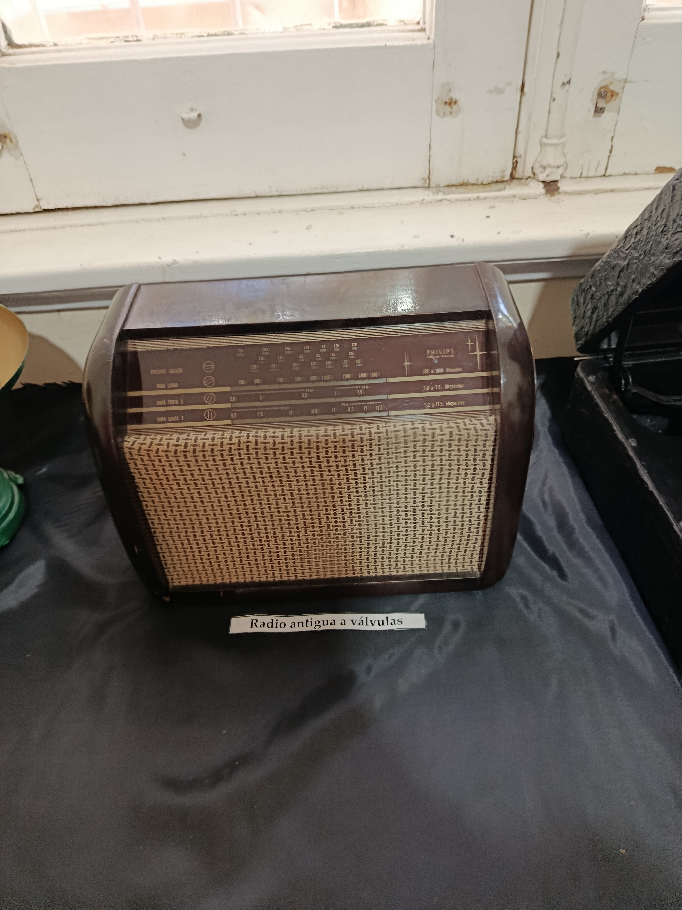
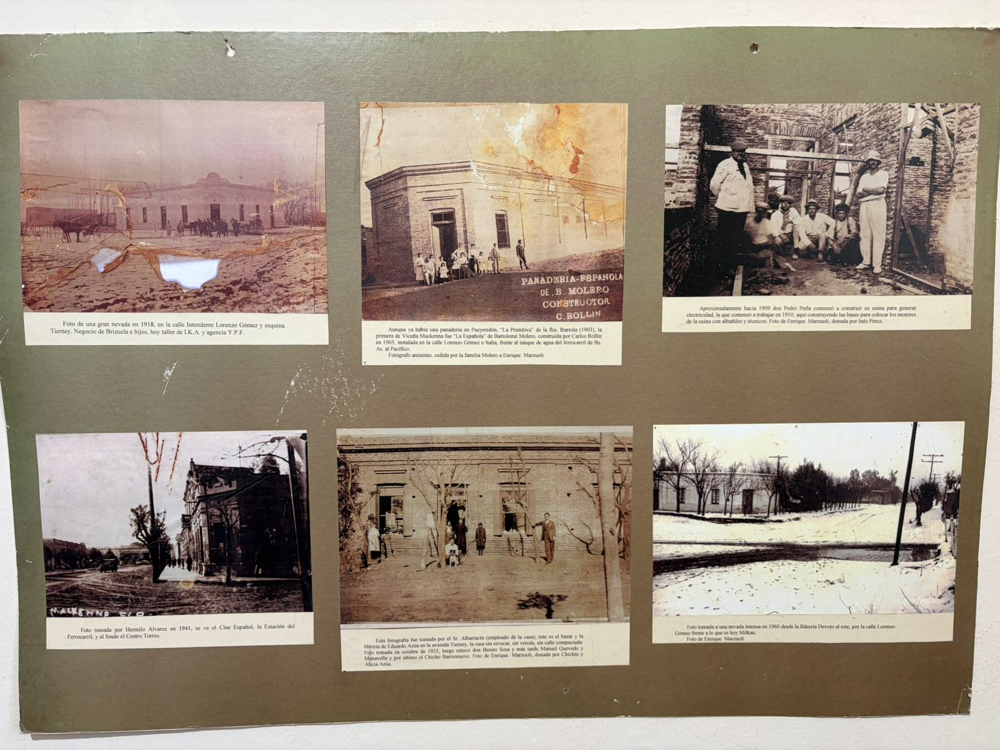
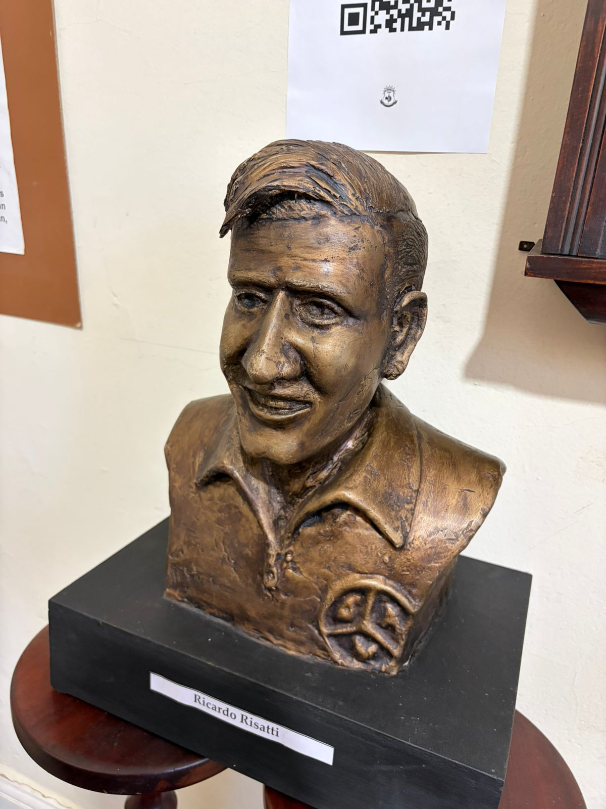


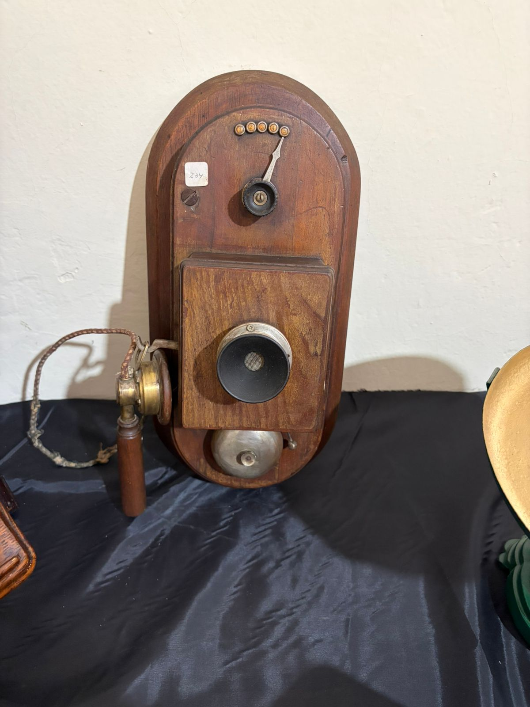
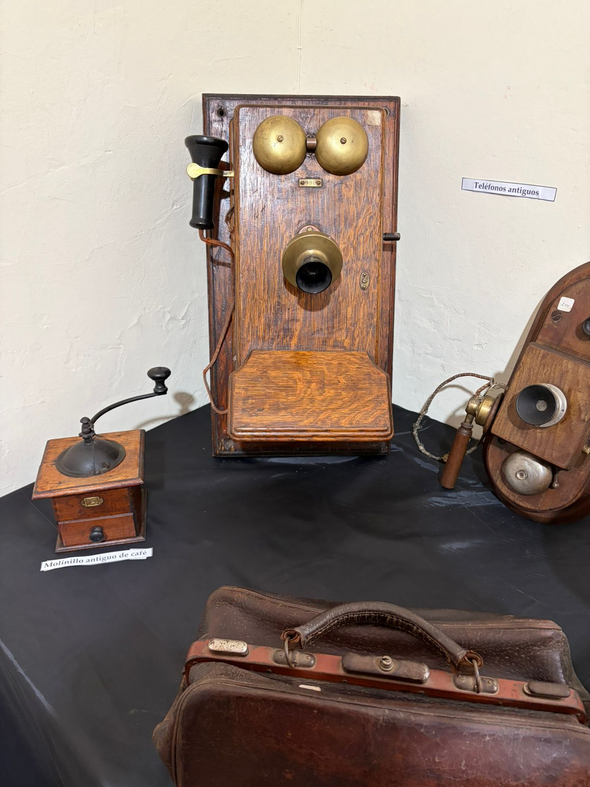
Preservando la historia y la identidad de nuestro pueblo.
Conocer másEl Museo Regional nació gracias al esfuerzo y compromiso de vecinos de Vicuña Mackenna que soñaban con preservar la historia local.
Tras años de trabajo conjunto entre la comunidad y la Municipalidad, el proyecto logró concretarse en el histórico edificio conocido como “Chapas Verdes”.
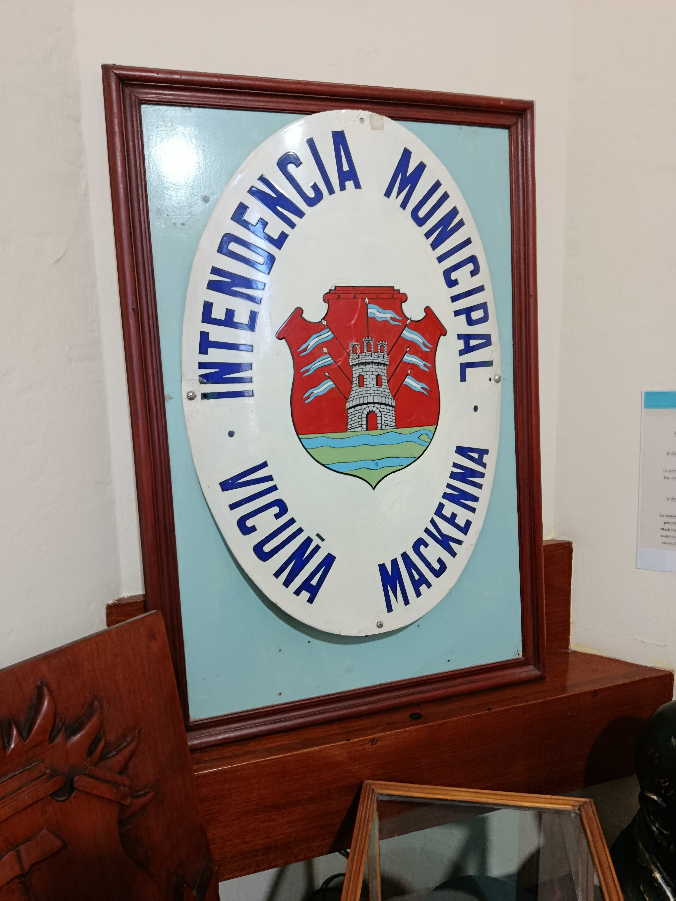
Nace la idea de crear un museo regional.
Se aprueba oficialmente el proyecto del museo.
El museo preserva la memoria y la identidad local.
Enrique M. Marzuoli
Rogelio Alfonso
Luis Alvarez
Víctor Hugo Mació
Carlos Castro
Soledad Armando
Eduardo Soulier
Mauricio Sarandón
Vicuña Mackenna se encuentra ubicada al sur de la provincia de Córdoba, en el departamento Río Cuarto, en el cruce de las rutas nacionales 7 y 35. Su ubicación estratégica la conecta con importantes ciudades de la región y la convierte en un punto clave del sur cordobés.
Antes de la llegada de los colonizadores, estas tierras estaban habitadas por pueblos originarios pampas y ranqueles. A fines del siglo XIX, el desarrollo del ferrocarril marcó el inicio del crecimiento de la localidad.
En 1885 se inauguró la estación ferroviaria “Vicuña Mackenna”, nombre elegido en homenaje al escritor e historiador chileno Benjamín Vicuña Mackenna, amigo de Domingo Faustino Sarmiento.
En 1904, Clodomiro Torres impulsó la fundación de una colonia agrícola en estas tierras, dando origen al entonces llamado “Pueblo Torres”. Finalmente, en 1911, el pueblo adoptó oficialmente el nombre de Vicuña Mackenna.
Actualmente, la localidad continúa creciendo en los ámbitos económico, social y cultural, destacándose principalmente por su actividad agrícola-ganadera y por conservar viva su identidad histórica.
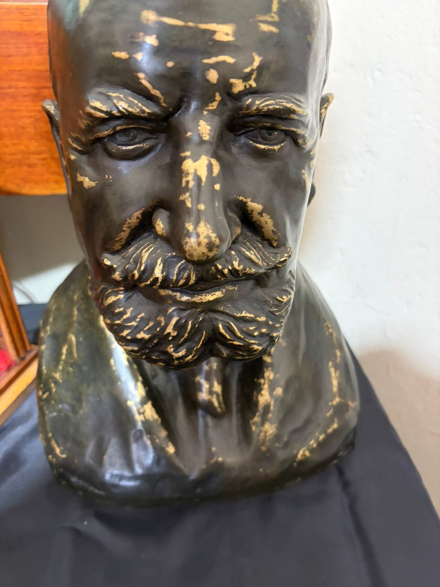
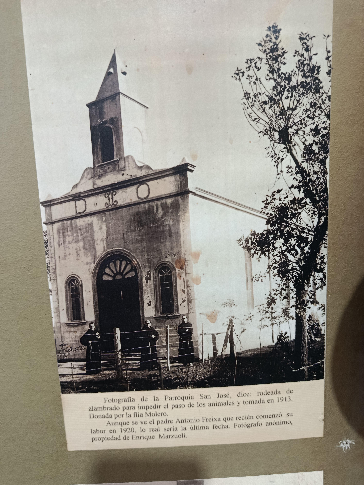









Clodomiro Torres fue un comerciante, financista, agricultor y hacendado argentino, nacido en la Ciudad de Buenos Aires. Proveniente de una familia con raíces españolas y criollas, fundó la casa de seguros "El Comercio", que alcanzó gran prestigio. Participó activamente en diversos sectores económicos, especialmente en actividades agrícola-ganaderas en las provincias de Córdoba y Buenos Aires. En 1904 impulsó la creación de una colonia agrícola-ganadera en tierras de su propiedad, ubicada en el Departamento Río Cuarto, Pedanía La Cautiva, en Córdoba. La solicitud fue presentada al Ministerio de Hacienda en el marco de una ley provincial vigente desde 1896. Esta iniciativa dio origen a lo que luego sería conocido como Pueblo Torres, en reconocimiento a su fundador. Estuvo casado con Ascensión Suárez y tuvo un hijo, Gustavo, quien heredó la estancia familiar "La Arcadia". Clodomiro Torres falleció en la Capital Federal en 1938, poco antes de cumplir 81 años.
La iglesia parroquial fue construida en 1904 pero en 1903 se habían bautizado numerosos niños, según el padre Pacífico Sallent, el primer sacerdote fue Amancio Rodríguez, este sacerdote venía de Laboulaye una vez por mes y en 1902 se colocó la cruz de la misión en un oratorio al aire libre, luego se construyó la Capilla que fue inaugurada el 9 de julio de 1906, se construyó frente a la plaza con armazón de tirantes de pinotea con chapas laterales y techo del mismo material, el terreno fue donado por doña Carmen Avellaneda de Goyena, lo mismo la imagen de la Virgen del Carmen que se venera todo los 16 de julio. Volviendo a la actual iglesia, ésta comenzó con un edificio de cemento armado con cielo raso de madera, piso de mosaico y un campanario con dos campanas, el edificio tiene 18 mts. de frente por 25 de fondo y 7 mts. de alto, una sacristía de 5 x 4 mts. y otra habitación de igual tamaño, todos ellos ubicados en un terreno de 100 mts. x 40 mts. todo cercado con alambre y puerta de hierro. Amancio Rodríguez estuvo hasta 1921, desde esta fecha asumió el Padre Antonio Freixa, franciscano que estuvo hasta 1940 y desde 1940 a 1945 Bernardino Rotland, desde esa fecha hasta 1946 se sucedieron varios sacerdotes, finalmente se hizo cargo el Padre Joaquín Rivarola, el 4 de septiembre de 1946 el Monseñor Leopoldo Buteler la oficializa como parroquia. A fines de 1968 lo reemplaza Sergio Loidi y estuvo hasta 1969 y el 1º de enero de 1970 se hace cargo el Padre Enrique Crescencio Estrada. El 10 de marzo de 1992 se hace cargo el sacerdote Ariel Ebert D’ Andrea y por último Jorge Basso.